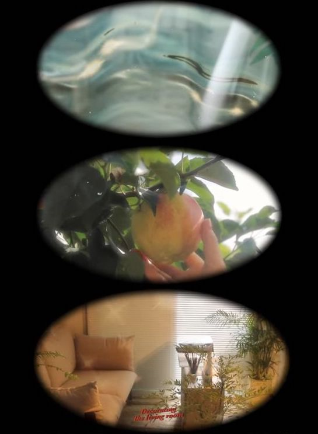
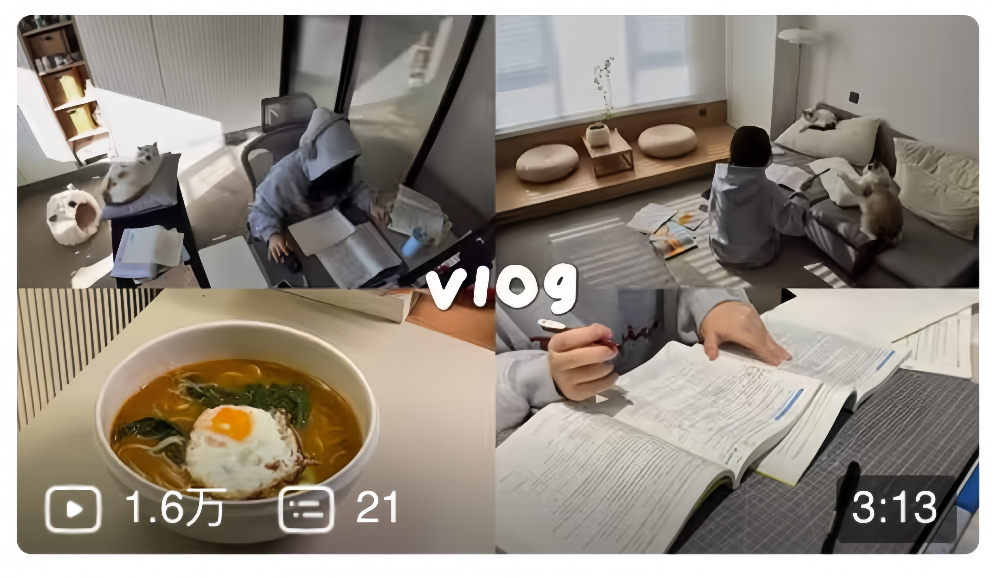

This page focuses on analyzing current popular vlog trends and categories. What categories of vlogs are people generally sharing? We discuss the importance of titles in short video vlogs, especially on Chinese platforms, and why these vlogs captivate large audiences. What contexts do people exactly want to gain through watching vlogs? This section is dedicated to unraveling the fundamental attractions behind these trendy vlogs.
These video diaries encompass the daily happenings and life details of the vlogger. Often wrapped in a warm and genuine atmosphere, lifestyle vlogs are usually accompanied by light and cheerful background music, emphasizing the comfort and familiarity of everyday life.
Typically featuring the vlogger's shopping hauls or shopping experiences. These vlogs attract audiences interested in beauty and fashion, drawing viewers into the thrill of new purchases and style discoveries.
Traveler's perspective videos that document adventures across various destinations, showcasing travel experiences and exploring new places. With rich visual content and captivating travel narratives, these vlogs take viewers on a vicarious journey.

Food diaries with a healing filter and a cozy atmosphere, showing the vlogger's culinary life over a week. These vlogs focus more on the everyday process of food preparation, offering audiences a relaxing view of daily gastronomic adventures, as opposed to a purely instructional style.
The caption, or title, of a Vlog has a significant impact on attracting viewers on Chinese social media platform. From initial everyday records, Vlogs have evolved into a means of showcasing specific lifestyles, work environments, or social identities. The choice of caption has shifted from merely describing content to becoming a tool to spark curiosity, resonate with audiences, and provide specific information. This reflects modern society's curiosity about the lives of others and the trend of exploring and experiencing different lifestyles through online platforms. These Vlogs attract large audiences because they offer the opportunity to vicariously experience the lives of others, embodying various social roles and cultural backgrounds. Viewers watch Vlogs for entertainment, information, inspiration, or simply to satisfy their curiosity about other people's ways of life.
In the realm of vlogging, content and popularity trends mirror societal and cultural priorities. While some vloggers try hard to hashtag themselves, there’re certain group of vloggers who still use normal caption yet gain a great amount of followers and viewers. 'Face' and 'Money' have emerged as potent attractors of viewership.
On visually-driven platforms, physical attractiveness becomes a form of capital. Vloggers with high aesthetic appeal tend to gain audience attention more easily, as they meet or exceed mainstream beauty standards. This "beauty economy" applies not just to individual vloggers but is also evident in advertising and media promotions.
Similarly, the display of wealth offers a window of escape from reality, allowing viewers to experience a lifestyle they might not have direct access to. This display is often associated with luxury, success, and social status.
Viewers may be drawn to vloggers who appear to live an ideal life. This could be due to envy of such a lifestyle or the desire to be inspired by these vlogs to pursue their own success.
While beauty and wealth can attract viewers, the depth and quality of the content remain key to maintaining long-term audience engagement. Viewers might initially come for the external appeal, but their continued return often depends more on the authenticity, relevance, or value of the content provided.